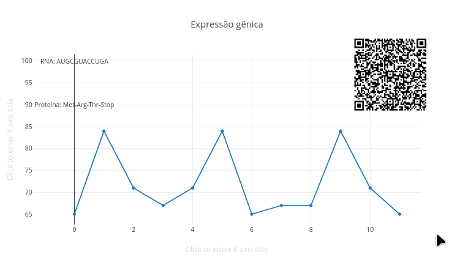
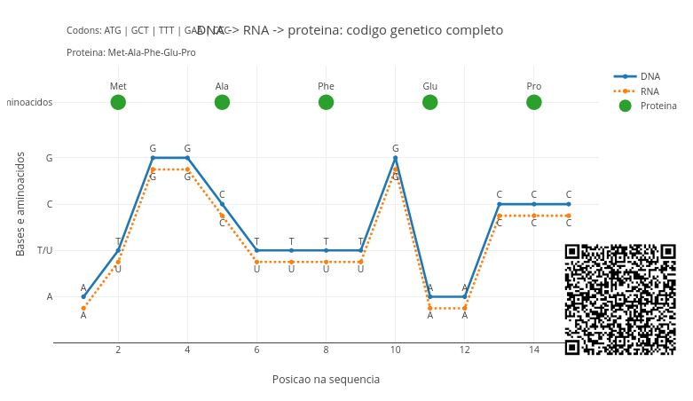
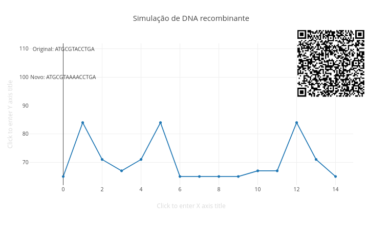
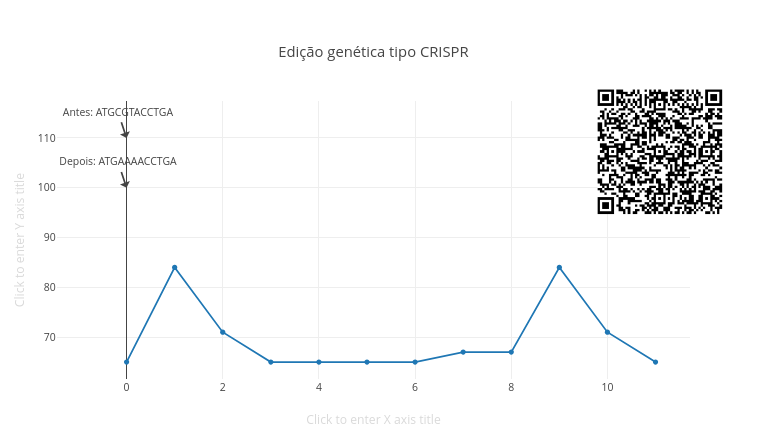
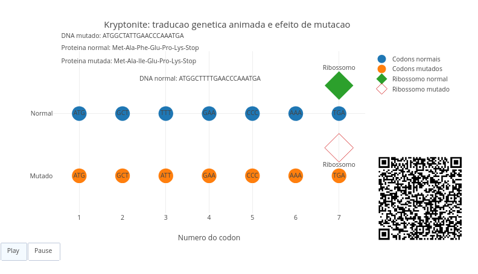

7 Reprogramando a Vida: DNA, Genes e Biotecnologia Moderna
Pense num filme de ficção científica. E num personagem típico…um daqueles cientistas que os cineastas adoram apresentar como descabelados, com rostos vidrados em tubos de ensaio e uma personalidade que se mostra um prato cheio à psicanálise forense ! No filme, o cientista maluco usa uma ferramenta, modifica um DNA e o põe numa célula, pra gerar um novo organismo com novas funções, e ainda por cima resistente a uma doença mortal !
Bom, isso já deixou de ser ficção! É a Biologia Molecular à serviço da Biotecnologia moderna. Quando passamos a manipular o DNA já há algumas décadas, começamos a experimentar novas técnicas e aplicações da engenharia genética, do DNA recombinante, e da edição de genes, permitindo que a vida possa ser programada nos dias de hoje. Este capítulo pretende passear um pouco sobre alguns conceitos da estrutura do DNA, o código da vida, bem como aplicações biotecnológicas compreendidas nos estudos de expressão gênica (informação virando função) e na modificação do DNA (DNA recombinante).
Depois de explorar, você consegue:
- Entender o DNA como sistema de informação
- Explicar como genes são expressos
- Compreender como o DNA pode ser manipulado
- Relacionar biotecnologia com aplicações reais
- Experimentar visualizações interativas com objetos computacionais.
Para iniciar o capítulo, o JSPlotly abaixo busca simular, ainda que bem longe da realidade, por óbvio, a expressão gênica que envolve a síntese de uma proteína a partir do DNA.

O app mostra, de forma simplificada, que a informação genética pode ser lida, copiada e transformada em função biológica. O processo ocorre em 2 etapas. Primeiro, o DNA é convertido a RNA pela transcrição, seguido depois pela tradução, essa convertendo o RNA em uma proteína. É necessário dizer que, ao falarmos em “converter o DNA em…”, na verdade estamos falando de um gene apenas, a estrutura molecular que contém o código necessário para a construção final de uma proteína, ou somente de uma parte dessa. Essa passagem de DNA para proteína é denominada por *Dogma Central da Biologia Molecular*. E, como um dogma, é inquestionável e definitivo, embora haja, como há sempre em tudo, algumas poucas excessões na Biologia.
\[ DNA \rightarrow RNA \rightarrow proteína \tag{7.1}\]
Agite antes de usar
O gráfico mostra o DNA como uma sequência numérica (representação simbólica). Mas o mais importante não está na forma do gráfico, mas sim nas anotações que aparecem nele. Veja que lá tem informações sobre o RNA gerado e a proteína formada.
Execute o script com a sequência original, ou seja:
let dna = "ATGCGTACCTGA";Depois altere a sequência para outras variações, tais como:
let dna = "ATGACCUGA";
let dna = "ATGCGTCGTACCUGA";Observe a sequência de RNA gerada, bem como a proteína formada. Experimente também mudar apenas uma letra. Em relação à sequência original, poderia ser, por exemplo:
let dna = "ATGCGTACCTAA";Veja como pequenas mudanças podem alterar toda a proteína. Isso ocorre porque o DNA é como um código, e cujas letras representam os monômeros de suas bases nitrogenadas. Durante sua transcrição, T (timina) vira U (uracila), formando o RNA. Durante a tradução o RNA é lido em trincas ( ou tripletes) chamadas códons, cada um representando um aminoácido. E há códigos também de início e de parada para a “leitura” do RNA, por exemplo:
- AUG → Met (início)
- UGA → Stop (fim)
Assim, uma sequência simples de bases se transforma em uma cadeia de aminoácidos ao final, algo que é realizado por um grande complexo nucleoproteico contendo o RNA, o ribossomo. Segue uma “sequência” rápida para uso do app:
- Rode o script;
- Observe a sequência de DNA;
- Veja a sequência de RNA gerada;
- Observe a proteína formada;
- Identifique o códon de início (AUG);
- Identifique o códon de parada (UGA);
- Modifique um nucleotídeo;
- Veja se a proteína muda;
- Modifique vários nucleotídeos;
- Observe como a sequência final se altera.
Note que uma pequena mudança no DNA pode alterar pouco ou muito uma proteína final. Isso ocorre em função do tipo da base nitrogenada que é substituida, por exemplo, numa mutação gênica. Se a base trocada for redundante, isto é, permite que o aminoácido produzido se mantenha o mesmo, a proteína não sofre alteração. Mas se a base alterar o aminoácido traduzido, aí o “bicho pega”, e a proteína pode até deixar de desempenhar suas funções.
Essa última observação é vista em algumas doenças, como a anemia falciforme, por exemplo. Nessa, uma única base nitrogenada é trocada, levando a hemoglobina, proteína transportadora de oxigênio às células, a ter um aminoácido diferente justamente num local importante para mantê-la estável dentro da hemácia. Essa instabilidade leva à precipitação da hemoglobina, “entortando” a hemácia para uma forma de foice. Daí o nome da doença.
Alguns contextos para você praticar com o JSPlotly.
- Sequência funcional. Essa sequência gera uma proteína completa ?
let dna = "ATGCGTACCTGA";- Mutação pontual. Uma única troca de base pode interromper a produção da proteína ?
let dna = "ATGCGTACCTAA";- Sem códon de parada. O que acontece quando não há sinal de parada ?
let dna = "ATGCGTACCACC";- Sequência curta. Uma proteína muito curta pode ser funcional ?
let dna = "ATGUGA";- Sequência aleatória. Toda sequência de DNA gera uma proteína funcional ?
let dna = "GTCGTCGTC";A ideia é visualizar o dogma central da Biologia Molecular, mas aromatizado com propósito:
\[ informação \rightarrow transcrição \rightarrow tradução \rightarrow função \]
Por dentro do script
O script começa com a sequência de DNA:
let dna = "ATGCGTACCTGA";Depois realiza a transcrição:
let rna = dna.replace(/T/g, "U");Isso simula a troca de timina por uracila.
Em seguida, define uma tabela simplificada de códons:
let codons = {
"AUG": "Met",
"CGU": "Arg",
"ACC": "Thr",
"UGA": "Stop"
};Depois o RNA é lido de três em três:
for (let i = 0; i < rna.length; i += 3)Cada trinca gera um aminoácido:
protein.push(codons[codon] || "?");Se o códon não estiver na tabela, aparece "?".
Assim, o script transforma sequência genética em produto funcional.
Depois de observar uma versão simplificada da expressão gênica, agora você pode experimentar algo mais próximo da realidade biológica: o *código genético completo*. O próximo script da Figura 7.3 permite que você coloque qualquer sequência de DNA válida para ser traduzida em uma proteína. Assim como acontece de verdade nas células vivas !

Esse novo JSPlotly mostra a tradução completa do DNA numa proteína usando o código genético real. Agora você pode acompanhar, simultaneamente, a sequência de DNA e de RNA, os códons (trincas), bem como os aminoácidos formados. O script roda um gráfico que organiza a informação em três níveis: DNA para sequência original, RNA para versão transcrita e proteína para o resultado funcional. A altura do gráfico não é quantitativa, mas simbólica. Ela representa as bases (A-adenina, T/U-timina-DNA/uracila-RNA, C-citosina, G-guanina), e com os aminoácidos acima. Novamente, a ideia básica do app é mostrar que a vida funciona como um sistema de leitura e tradução de informação.
Agite antes de usar
Execute o aplicativo inicialmente com a sequência padrão:
const dnaEntrada = "ATGGCTTTTGAACCC";Depois experimente sequências distintas. Por exemplo:
const dnaEntrada = "ATGAAATTTGGGCCC";
const dnaEntrada = "ATGCGTACGTTAG";Agora altere apenas uma base e observe como a proteína muda.
const dnaEntrada = "ATGGCTTTTGAACCA";A pergunta “que não quer calar” aqui é: como o DNA “sabe” qual proteína produzir ?
E a resposta está no código genético. Cada trinca de bases (códon) corresponde a um aminoácido. Por exemplo, ATG \(\rightarrow\) Met (início), GCT \(\rightarrow\) Ala, e TGA \(\rightarrow\) Stop (parada). Assim, o DNA contém as instruções para produzir as proteínas. Seguem instruções rápidas para o app.
- Rode o script;
- Observe o DNA no gráfico;
- Compare com o RNA logo abaixo;
- Identifique os códons (grupos de 3);
- Veja os aminoácidos gerados;
- Localize o códon de início (ATG);
- Procure por códons de parada (TAA, TAG, TGA);
- Modifique uma base;
- Veja se o códon muda;
- Observe o efeito na proteína.
Depois praticar um pouco, você verá que uma pequena alteração no DNA pode alterar pouco uma proteína, ou mudá-la completamente. Vão alguns contextos também pra você sedimentar as ideias.
- Sequência funcional completa. A proteína é formada corretamente até o códon de parada ?
const dnaEntrada = "ATGGCTTTTGAACCC";- Mutação silenciosa. Diferentes códons podem gerar o mesmo aminoácido ?
const dnaEntrada = "ATGGCC";- Mutação com mudança de aminoácido. Uma troca altera a função da proteína ?
const dnaEntrada = "ATGGTT";- Parada precoce. O que acontece quando a tradução para cedo demais ?
const dnaEntrada = "ATGTAA";- Sem códon de início. Toda sequência é traduzida, ou é preciso um ponto de partida ?
const dnaEntrada = "GCTGCTGCT";- Sequência longa. Como proteínas maiores emergem de sequências repetidas ?
const dnaEntrada = "ATGGCTGCTGCTGCTGCTGCTTGA";Por dentro do script
O script começa limpando a sequência:
const dna = dnaEntrada.toUpperCase().replace(/[^ATCG]/g, "");Depois cria o RNA, substituindo timina (T) por uracila (U):
const rna = dna.replace(/T/g, "U");Em seguida, percorre a sequência em trincas:
for (let i = 0; i < dna.length; i += 3)Cada códon é traduzido:
aminoacidos.push(codigoGenetico[codonDNA] || "?");Depois o gráfico mostra três camadas: DNA (bases), RNA (transcrição) e proteína (tradução). E ainda exibe os códons identificados e a sequência final da proteína.
A Biotecnologia moderna ocupa-se de compreender os organismos vivos sob uma visão molecular voltada a estudos de proteínas, hereditaridade, mutações e doenças genéticas. O processo que leva da transcrição do DNA à tradução em proteínas oportuniza o surgimento de aplicações diversas que dependem dessa lógica, como novas vacinas de RNA, terapias gênicas, edição genética (CRISPR), plantas transgênicas, testes de DNA, diagnóstico molecular e engenharia de proteínas, por exemplo.
O DNA recombinante está na base de muitas dessas aplicações modernas, incluindo a produção de insulina por bactérias, os organismos geneticamente modificados (OGM), enzimas industriais, pesquisa biomédica, e agricultura biotecnológica. O JSPlotly a seguir trata um pouco disso, abordando um modelo simples de DNA recombinante como uma sequência que recebe uma nova informação.

Depois de traduzir sequências de DNA em RNA e proteína, esse script dá um passo biotecnológico da hora: modificar a sequência original. A ideia agora é simular, de forma simples, o princípio do DNA recombinante, em que um fragmento genético pode ser inserido em outro DNA para formar uma nova molécula.
Agite antes de usar
O script simula a inserção de um pequeno trecho de DNA em uma sequência original. A sequência inicial é cortada em uma posição escolhida e um novo fragmento é inserido nesse ponto, resultando numa nova sequência, o DNA recombinante. O gráfico resultante representa a sequência recombinante como uma linha simbólica. O mais importante está nas anotações, que mostram a sequência original junto com a nova sequência.
Inicialmente execute o script com:
let dna_original = "ATGCGTACCTGA";
let insercao = "AAA";
let corte = 6;Depois altere a inserção. Você pode usar, por exemplo, “GGG”, “TAA”, ou “ATG”.
E também mude a posição do corte, como let corte = 3 ou let corte = 9.
Observe como a sequência final muda quando adicionamos uma nova informação dentro de uma molécula de DNA. Em Biotecnologia, inserir um trecho de DNA pode alterar a sequência final, a leitura dos códons, a proteína produzida e até a função biológica resultante. Mesmo uma pequena inserção pode ter efeitos grandes, principalmente se mudar o modo como a sequência é lida. Segue um pequeno tutorial de uso do app.
- Rode o script com os valores originais;
- Compare a sequência original com a sequência nova;
- Observe onde a inserção apareceu;
- Altere
insercao; - Veja como o DNA recombinante muda;
- Altere
corte; - Observe como a posição da inserção modifica a sequência final;
- Use inserções com 3 bases;
- Depois teste inserções com 1, 2, 4 ou 5 bases;
- Observe que nem toda inserção preserva a leitura em códons.
Veja que inserir DNA muda sua interpretação biológica, e não apenas aumenta sua sequência. Mais alguns cenários pra você “brincar” de manipular genes:
- Inserção simples. Como uma pequena inserção altera a sequência final ?
let insercao = "AAA";
let corte = 6;- Inserção em outro ponto. A mesma inserção causa o mesmo efeito em posições diferentes ?
let insercao = "AAA";
let corte = 3;- Inserção de códon de parada. O que pode acontecer se um sinal de parada for inserido no meio da sequência ?
let insercao = "TAA";
let corte = 6;- Inserção de novo início. O que significa inserir um novo possível ponto de início ?
let insercao = "ATG";
let corte = 0;- Inserção fora do tamanho de códon. Por que inserir uma quantidade de bases que não é múltipla de 3 pode bagunçar a leitura ?
let insercao = "AA";
let corte = 5;- Sequência maior. Como fragmentos maiores podem acrescentar novas informações ao DNA ?
let dna_original = "ATGGCTTTTGAACCC";
let insercao = "GGGCCC";
let corte = 9;Em síntese, modificar a sequência modifica a informação, o que evidencia o potencial da intervenção biotecnológica.
Por dentro do script
O script começa com três informações principais:
let dna_original = "ATGCGTACCTGA";
let insercao = "AAA";
let corte = 6;A variável dna_original guarda a sequência inicial. A variável insercao guarda o novo fragmento, e a variável corte indica a posição onde o DNA será aberto. A recombinação acontece nesta linha:
let novo_dna = dna_original.slice(0, corte) + insercao + dna_original.slice(corte);A linha faz três coisas: pega o início do DNA original, adiciona a sequência inserida e completa com o restante do DNA original. Assim, o código imita uma operação básica de montagem genética.
CRISPR
Antes da iniciar a seção E se… em sequência, e se... a gente dispusesse de uma tecnologia de tesoura e cola para o DNA recombinante ?
Isso existe é uma das técnicas mais empregadas atualmente para edição genética, CRISPR (Clustered Regularly Interspaced Short Palindromic Repeats). Um palavrão em inglês, e que se traduz como Repetições Palindrômicas Curtas Agrupadas e Regularmente Interespaçadas. Ou seja, outro palavrão, mas agora em português !
CRISPR é uma tecnologia de edição genética que atua como uma “tesoura molecular” precisa, permitindo cortar e modificar o DNA das células. É baseada em um sistema de defesa bacteriano que utiliza uma enzima (geralmente Cas9) e um RNA guia para localizar e editar sequências genéticas específicas, com alta precisão, rapidez e baixo custo, para alterar o código genético. Como uma técnica verdadeiramente revolucionária da última década, o CRISPR permite corrigir mutações genéticas, estudar função de genes, desenvolver terapias, modificar organismos, bem como avançar na medicina personalizada. Diferente do DNA recombinante clássico, o CRISPR atua com precisão. É como editar uma palavra específica dentro de um texto, em vez de apenas inserir novos parágrafos.
Depois de inserir sequências (DNA recombinante), agora você pode experimentar um JSPlotly ainda mais refinado: editar diretamente o DNA existente. O script simula, de forma simplificada, o princípio do CRISPR — localizar um trecho específico e substituí-lo por outro.

O script simula uma edição genética dirigida. Você define uma sequência original de DNA, um trecho alvo, e uma nova sequência substituta. O sistema então encontra o alvo e o substitui diretamente. Um gráfico representa a sequência editada, anotando a sequência antes e a sequência depois. A diferença entre elas representa a edição genética. Guardadas as longínquas comparações com o método em laboratório, a simulação apresenta a base do CRISPR, uma técnica precisa para edição da informação genética.
Agite antes de usar:
Inicialmente, execute o script com:
let dna = "ATGCGTACCTGA";
let alvo = "CGT";
let substituto = "AAA";Depois teste:
let alvo = "ACC";
let substituto = "GGG";E também:
let alvo = "ATG";
let substituto = "TAA";Observe como a sequência muda quando se altera diretamente um trecho específico do DNA. Diferente da inserção aleatória do JSPlotly da Figura 7.4, aqui há precisão. Isso pode corrigir mutações, alterar proteínas, interromper funções ou mesmo criar novas funções. E, mais uma vez nessa obra, mostra-se que uma pequena alteração localizada pode ter grandes efeitos. Isso é quase uma citação do Tio Ben do Homem-Aranha, inclusive.
O modo de usar do script segue abaixo.
- Rode o script;
- Observe a sequência original;
- Veja a sequência editada;
- Identifique onde ocorreu a substituição;
- Altere o
alvo; - Teste se ele existe na sequência;
- Altere o
substituto; - Compare diferentes edições;
- Tente substituir por sequências maiores ou menores;
- Observe quando nada muda (alvo inexistente).
Perceba então que editar um trecho específico é mais produtivo do que inserir sequências aleatórias. Vão alguns contextos para você experimentar no seu laboratório virtual de engenharia genética:
- Edição simples. Como uma substituição altera a sequência global ?
let alvo = "CGT";
let substituto = "AAA";- Alvo inexistente. O que acontece quando o trecho não é encontrado ?
let alvo = "GGG";- Substituição por códon de parada. Interromper uma sequência pode impedir a produção de uma proteína ?
let substituto = "TAA";- Alteração do início. Modificar o ponto inicial altera toda a leitura ?
let alvo = "ATG";
let substituto = "CCC";- Substituição maior. Substituir por um trecho maior altera o tamanho e a leitura da sequência ?
let substituto = "GGGCCC";- Substituição menor. Reduzir o tamanho da sequência pode bagunçar a leitura em códons ?
let substituto = "A";Por dentro do script
O script começa com três elementos:
let dna = "ATGCGTACCTGA";
let alvo = "CGT";
let substituto = "AAA";A variável dna contém a sequência original. A variável alvo define o trecho que será buscado. E a variável substituto define o que entrará no lugar. A edição ocorre nesta linha:
let editado = dna.replace(alvo, substituto);Essa função procura o primeiro trecho igual ao alvo e o substitui. Assim, o código simula a lógica básica de uma edição genética dirigida.
Antes de nos perdemos nessa belicosa seção, que tal um último JSPlotly bem “animado”, juntando as ideias principais do capítulo ? Depois de aprender a traduzir DNA e editar sequências, agora você vai observar o efeito de uma mutação acontecendo em tempo “real” durante a tradução !
No app que segue, o ribossomo “caminha” pela sequência, permitindo que você compare a sequência normal com a sequência mutada e a proteína resultante.

Agite antes de usar
O script mostra a tradução genética como um processo dinâmico. No gráfico, os losangos representam o ribossomo. O eixo horizontal do gráfico representa os códons. Já o eixo vertical separa a sequência normal da sequência mutada. Pela animação, você acompanha os códons sendo lidos passo a passo, o ribossomo avançando na sequência, a diferença entre DNA normal e mutado, e o impacto da mutação na proteína.
Execute o script e clique em Play. Observe então o ribossomo avançando, os códons sendo “lidos”, e a comparação entre normal e mutado. Depois altere:
const posicaoMutacao = 7;
const novaBase = "A";E teste também:
const posicaoMutacao = 3;
const novaBase = "T";Desligue a mutação:
const aplicarMutacao = false;E compare os resultados. Durante a tradução o ribossomo lê códons sequencialmente. Cada códon define um aminoácido e a sequência define a proteína. Assim, uma mutação pode alterar um aminoácido, gerar um códon de parada precoce, deslocar toda a leitura (dependendo do tipo), ou ainda não alterar nada (mutação silenciosa). O efeito depende de onde e como a mutação ocorre.
Por dentro do script
O script começa com a sequência original:
const dnaNormal = "ATGGCTTTTGAACCCAAATGA";Depois aplica a mutação:
const dna1 = mutarDNA(dna0, posicaoMutacao, novaBase);A função abaixo substitui uma única base na posição escolhida:
function mutarDNA(seq, pos, base)Depois ocorre a tradução:
const normal = traduzir(dna0);
const mutado = traduzir(dna1);E a “mágica” acontece na animação:
frames.push({Cada frame representa o ribossomo avançando um códon, permitindo que você veja a tradução acontecendo passo a passo. Segue um tutorial de uso do app.
- Rode o script;
- Clique em
Play; - Observe o ribossomo avançando;
- Compare linha normal e mutada;
- Veja onde aparece a diferença;
- Observe a proteína final;
- Altere
posicaoMutacao; - Veja se o impacto muda;
- Altere
novaBase; - Compare diferentes tipos de mutação;
- Desative a mutação (
false); - Compare com o caso original.
Perceba que, dependendo da situação, uma mutação muda pouco ou altera toda uma sequência funcional. Seguem alguns contextos para você experimentar junto à animação.
- Mutação silenciosa. Por que algumas mutações não alteram a proteína ?
const posicaoMutacao = 4;
const novaBase = "C";- Mudança de aminoácido. Quando uma mutação altera um aminoácido, o que pode acontecer com a função da proteína ?
const posicaoMutacao = 7;
const novaBase = "G";- Parada precoce. O que acontece quando surge um códon STOP no meio da sequência ?
const novaBase = "T";- Mutação no início. Alterar o início muda toda a tradução ?
const posicaoMutacao = 1;- Sem mutação. Como o sistema se comporta quando não há alteração ?
const aplicarMutacao = false;- Comparação dinâmica. Observe a animação completa. Em que momento a mutação começa a fazer diferença ?
A animação mostra uma leitura progressiva da informação genética, revelando o que uma mutação faz com a leitura do código ao longo do tempo.
Agora sim, uma “saraivada” de “E…se”s”tecnologicamente recombinantes” ! Segue:
- E se uma única letra no DNA fosse capaz de mudar completamente uma proteína — e, com isso, alterar o funcionamento de uma célula inteira ?
- E se pequenas mutações que parecem insignificantes fossem, na verdade, responsáveis pela diversidade de todos os seres vivos ?
- E se o mesmo código genético que produz proteínas no seu corpo pudesse ser reescrito em laboratório ?
- E se uma sequência de DNA pudesse ser “copiada, colada e editada” como um texto digital ?
- E se inserir um pequeno trecho de DNA fosse suficiente para uma bactéria produzir um hormônio humano ?
- E se mutações silenciosas realmente passassem despercebidas, mas ainda assim influenciassem o funcionamento do organismo ?
- E se uma mutação criasse um códon de parada no meio de um gene — o que deixaria de ser produzido ?
- E se o ribossomo fosse como um leitor automático, que percorre o código sem “entender” o significado, mas apenas seguindo regras ?
- E se a vida fosse, em essência, um sistema de leitura e interpretação de informação molecular ?
- E se diferentes combinações de três letras fossem suficientes para codificar toda a diversidade de proteínas conhecidas ?
- E se mudar o ponto de leitura (frame) fosse como mudar o idioma de uma frase, ou seja, transformando completamente o sentido ?
- E se editar genes com precisão pudesse corrigir doenças hereditárias antes mesmo de elas se manifestarem ?
- E se fosse possível reprogramar células para produzir novas funções, como sensores ou medicamentos ?
- E se a biotecnologia permitisse projetar organismos com características específicas ?
- E se o limite entre “natural” e “modificado” fosse cada vez mais difícil de definir ?
- E se o mesmo processo que permite evolução também fosse a base de doenças ?
- E se a diferença entre saúde e doença estivesse, às vezes, em uma única base do DNA ?
- E se a evolução fosse, em grande parte, um experimento contínuo de mutações sendo testadas ao longo do tempo ?
- E se mutações que hoje parecem neutras se tornassem vantajosas em outro ambiente ?
- E se fosse possível prever o efeito de uma mutação antes mesmo de ela acontecer ?
- E se proteínas fossem apenas uma das formas de “interpretar” o DNA, e existissem outras ainda desconhecidas ?
- E se a vida pudesse ser descrita como um fluxo contínuo de informação sendo copiada, editada e traduzida ?
- E se o DNA fosse mais parecido com um código de programação do que com uma estrutura estática ?
- E se aprender Biologia fosse, no fundo, aprender a ler, interpretar e modificar esse código ?
- E se, no futuro, editar genes fosse tão comum quanto editar um documento hoje ?
- E se a maior revolução científica não estivesse em descobrir novos elementos, mas em aprender a reescrever a vida ?
- E se nós mesmos fôssemos, ao mesmo tempo, leitores e resultados desse código em constante transformação ?
A lógica explorada nesse capítulo, de que a informação define o comportamento, aparece em muitos outros contextos, não sendo exclusiva da Biologia Molecular. Em diferentes sistemas, a forma como a informação é organizada e interpretada determina o funcionamento do todo.
Na Biologia, isso é direto: vimos que sequências de DNA armazenam instruções que são transcritas e traduzidas em proteínas. Pequenas mudanças nessa sequência podem alterar estruturas, funções e até características de um organismo inteiro. A vida, nesse sentido, pode ser entendida como um sistema contínuo de leitura, interpretação e execução de informação.
Nas Ciências da Computação, esse mesmo padrão aparece de forma evidente. Códigos, algoritmos e programas são sequências de instruções que, quando executadas, produzem comportamentos complexos. Alterar uma linha de código pode mudar completamente o resultado — assim como uma mutação pode alterar uma proteína.
Na linguagem humana, palavras e frases seguem regras semelhantes. A ordem e a combinação dos elementos determinam o significado. Uma pequena alteração pode mudar completamente a interpretação. Assim como no DNA, a sequência e o contexto importam tanto quanto o conteúdo.
Na Biotecnologia moderna, isso também vira uma ferramenta. Editar, inserir ou substituir sequências permite reprogramar sistemas biológicos inteiros. O mesmo raciocínio aparece em engenharia genética, Medicina personalizada e até Inteligência Artificial. Em todos esses “mundos”, controlar a informação permite que se controle o comportamento.
Nessa seção, damos sequência a um aprendizado panorâmico em JavaScript, voltado ou não à edição de objetos com JSPlotly, como realizado no capítulo anterior. Nesse sentido, segue um pouco sobre a estrutura de JS para aritmética e arrays (vetores).
E agora um truque bem bacana !!! Você poderá treinar a linguagem JavaScript utilizando um JSPlotly específico para isso !. Esse JSPlotly personalizado está disponível na Figura 9.22 abaixo. Abra-o num navegador e deixe-o quietinho lá. Quando quiser rodar algum trecho desses treinamentos, basta copiar, colar o trecho no campo “ÁREA PARA DIGITAR COMANDOS”, e rodá-lo. Muito legal, não ?!

Aritmética
Diversas operações matemáticas são possíveis, quer pelo JS puro, quer pela instalação de bibliotecas específicas, tais como Plotly.js utilizada no JSPlotly, mathjs ou numjs. Segue abaixo uma lista de operações aritméticas realizadas com a linguagem:
- + : adição de números ou concatenação de texto (strings);
- - : subtração;
- * : multiplicação;
- / : divisão;
- % : módulo;
- ++ : incremento de valor;
- -- : decremento;
- ** : exponenciação.
Obs: o operador de módulo % divide o primeiro operando pelo segundo operando e retorna o resto.
Os exemplos a seguir ilustram o uso desses operadores aritméticos, bem como de algumas constantes matemáticas. Para testá-los, cole no JSPlotly customizado, como informado acima. Você pode experimentá-los separadamente ou em bloco.
let resultado = 0;
resultado = 5 + 3; print("5 + 3 = ", resultado); // 8
resultado = 10 - 4; print("10 - 4 = ", resultado); // 6
resultado = 6 * 7; print("6 * 7 = ", resultado); // 42
resultado = 20 / 5; print("20 / 5 = ", resultado); // 4
resultado = 17 % 3; print("17 % 3 = ", resultado); // 2
resultado = 2 ** 3; print("2 ** 3 = ", resultado); // 8
let contador = 5; contador++; print("contador++ = ", contador); // 6
let decrementar = 8; decrementar--;print("decrementar-- = ", decrementar); // 7
let soma = 10; soma += 5; print("soma += 5 = ", soma); // 15
let diferenca = 20; diferenca -= 7;print("diferença -= 7 = ", diferenca); // 13
let produto = 3; produto *= 4; print("produto *= 4 = ", produto); // 12
let quociente = 24; quociente /= 3;print("quociente /= 3 = ", quociente); // 8
resultado = Math.sqrt(25); print("sqrt(25) = ", resultado); // 5
resultado = Math.abs(-15); print("abs(-15) = ", resultado); // 15
resultado = Math.floor(7.8); print("floor(7.8) = ", resultado); // 7
resultado = Math.ceil(7.2); print("ceil(7.2) = ", resultado); // 8
resultado = Math.round(9.4); print("round(9.4) = ", resultado); // 9
resultado = Math.max(42, 27); print("max(42,27) = ", resultado); // 42
resultado = Math.min(42, 27); print("min(42,27) = ", resultado); // 27
resultado = Math.sin(Math.PI/2); print("sin(π/2) = ", resultado); Arrays
Um array em JavaScript representa uma estrutura de dados para armazenamento de elementos ordenados. Esses elementos podem envolver qualquer tipo de dado, como números, strings, objetos, etc. Na prática, um array pode ser criado, acessado, filtrado, ou mapeado. Seguem exemplos:
Criação
const numeros = [1, 2, 3, 4, 5];
const cores = ['vermelho', 'verde', 'azul'];Acesso
print(numeros[0]);
print(cores[2]);Ou seja, para você acessar o array numeros, por exemplo, basta colar e rodar o seguinte trecho no JSPlotly de treinamento:
const numeros = [1, 2, 3, 4, 5];
const cores = ['vermelho', 'verde', 'azul'];
print(numeros[0]);Mapeamento (map)
const numeros = [1, 2, 3, 4, 5];
const quadrados = numeros.map(numero => numero * numero);
print(quadrados);Uma palavrinha sobre métodos
Observe que, diferente do que já foi explicitado, agora aparece um comando múltiplo, como “numeros.map”. Existe uma infinidade de comandos com esta sintaxe em JS. Ele representa a função que será aplicada a cada elemento do array numeros pelo método map. Além disso, surge a sintaxe “=>” ou sintaxe de arrow function (função de seta), uma forma concisa de atribuir um mapeamento. Assim, o comando inteiro:
Em JavaScript objetos são tratados como no mundo real, ou seja, possuem atributos e comportamentos. Atributos descrevem as características que um objeto possui, e os comportamentos as ações que podem realizar. A notação em JS para referenciar as propriedades de um objeto podem ser, alternativamente:
objeto.propriedade
...ou...
objeto[propriedade]numeros.map) é chamado no array numeros (um Array.prototype). O protótipo permite transmitir propriedades e métodos para um objeto JS. No caso, o método map() itera sobre cada elemento do array original, aplica uma função a cada um deles e retorna um novo array com os resultados. Assim, numero => numero numero* é a função de seta. E nesse caso, numero é o parâmetro de entrada da função, um atalho para o elemento atual do array sendo processado pelo map. Em adição, “=>” representa o separador entre o(s) parâmetro(s) e o corpo da função. Finalmente, “numero * numero” é a expressão que é executada, com o resultado sendo retornado pela função. Seguem outros exemplos para arrays e mapeamento: const x = [0, 1, 2, 3, 4];
const y = x.map(valor => Math.pow(2, valor))
print(y);const Vmax = 100;
const Km = 10;
const S_values = Array.from({length: 10}, (_, i) => i * 5);
const V_values = S_values.map(S => (Vmax * S) / (Km + S));
print("Valores de S:", S_values);
print("Valores de V:", V_values);JavaScript, uma linguagem orientada a objetos
Objetos, propriedades, e métodos
const ponto = { x: 2, y: 5 }; // objeto com duas propriedadesAssim, as propriedades são as características do objeto:
print(ponto.x); // mostra 2
print(ponto.y); // mostra 5
const carro = {
marca: "Toyota", // propriedade (dado)
ano: 2022, // propriedade
ligar: function() { // método (ação)
console.log("O carro está ligado!");
}
};
carro.ligar(); // chama o método
console.log(carro.marca); // acessa a propriedadeReforçando (não custa nada…), um objeto JavaScript envolve uma coleção de propriedades, onde cada propriedade é definida por um par chave-valor, permitindo uma representação ordenada de elementos. Objetos podem conter diferentes tipos de dados como valores, como números, strings, booleanos, arrays, outras funções e até mesmo outros objetos. Objetos criados são facilmente acessados por seus atributos. Seguem exemplos para testes.
Criação
const pessoa = {
nome: 'João',
idade: 30,
cidade: 'São Paulo'
};Acesso
print(pessoa.nome);
print(pessoa['idade']);Atributos
pessoa.profissao = 'Engenheiro';
print(pessoa);Para um exemplo fechado de objetos:
let pessoa = {
nome: "João",
idade: 30,
profissao: "Desenvolvedor",
hobbies: ["leitura", "música", "jogos"],
endereco: {
rua: "Rua Principal, 123",
cidade: "São Paulo",
},
saudacao: function () {
print("Olá, meu nome é " + this.nome);
},
};
print(pessoa.nome); // Saída: "João"
print(pessoa.hobbies[0]); // Saída: "leitura"
pessoa.saudacao(); // Saída: "Olá, meu nome é João"E por aí vai !! No próximo capítulo esse seção irá explorar um pouco sobre variáveis e funções.